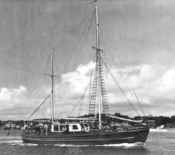

|  copyright - WHOI |
Built: 1940, Fairhaven, MA. Length: 59.’6'” Beam: 16'’ Draft: 8'’9”" Names: Halwin III, Physalia |
Physalia, a motor sailor originally designed as a yacht, was
used during WWII by the Coast Guard for auxiliary patrols. WHOI purchased
the vessel from Mr. W.P. Atwood of Newton, MA, in 1944. The vessel was
used in the local area for testing of equipment, explosives research, and
hydrostations. WHOI sold Physalia in 1946.